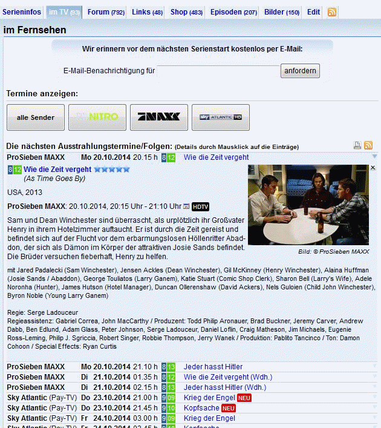
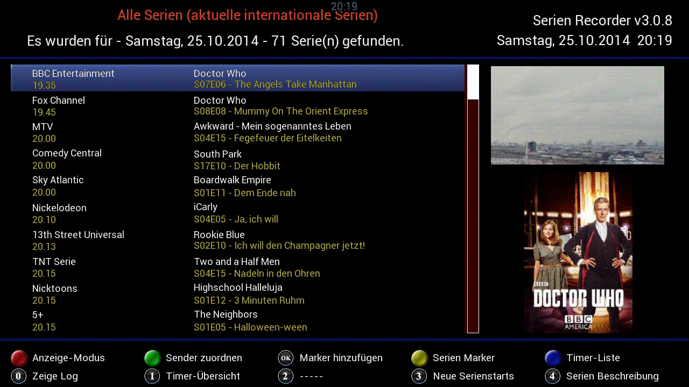
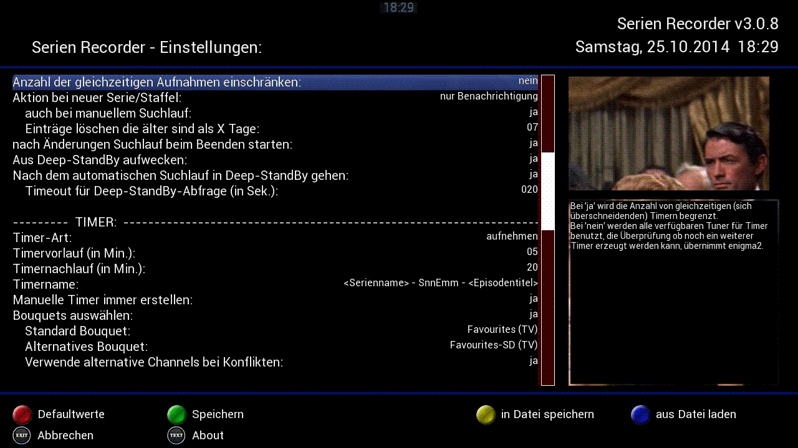
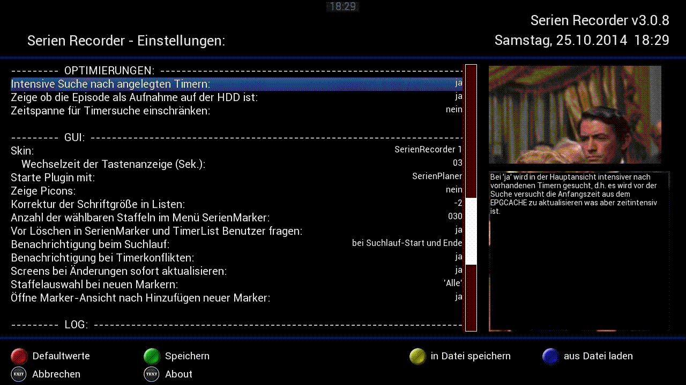

|
Diese
Anleitung basiert auf Texten und Bildern, die
freundlicherweise von @anz und @MacDisein zur Verfügung
gestellt wurden. Herzlichen Dank dafür.
1 Einleitung
Das
SerienRecorder Plug-In erleichtert
das Aufnehmen von Serien, indem für ausgewählte
Serien automatisch
Timer angelegt werden. Dabei überwacht das SerienRecorder
Plug-In ob
eine Folge bereits aufgenommen wurde oder nicht, sodass es zu keinen
Mehrfachaufnahmen kommt.
Der
Benutzer kann sog. Serien Marker
von den Serien anlegen, die vom SerienRecorder überwacht
werden
sollen. Für jeden Serien Marker kann konfiguriert werden
welche
Staffeln in die Überwachung einbezogen werden.
Der
SerienRecorder holt seine
Informationen aus dem Internet, genauer gesagt von www.wunschliste.de
– es ist auch zwingend notwendig, dass der Receiver eine
Internetverbindung hat. Zusätzlich werden auch noch
Serieninformationen und die Cover von www.imdb.com
abgerufen. Der Dienst www.wunschliste.de
bietet auf seiner Webseite für so gut wie alle Serien die
Ausstrahlungstermine im deutschen Fernsehen an. Diese Informationen
bereitet das SerienRecorder Plug-In auf und stellt eine
Oberfläche
zur Verfügung um die Lieblingsserien zu verwalten.
Es werden genaue Folgen-Informationen
abgerufen, so können diese in den Timer und damit in die
Aufnahmeinformationen mit aufgenommen werden, also z. B.
„S01E10 – Der
Baum“. Als Ausnahme können mittlerweile aber auch
Sonderfolgen mit zb. S01 oder Folge 345 (ohne
Staffel) vom SerienRecorder verarbeitet werden, die Staffel muss aber
auch hier angegeben sein.
Wird
eine Serie
also nicht erkannt oder aufgenommen, immer erst bei Wunschliste
nachschauen ob diese Kriterien erfüllt wurden.

Fig.1.1:
Beispiel einer Seite von wuschliste.de

1.1
Die Installation
Das
Plug-In kann über den Feed
installiert werden oder manuell über ein ipkg. Die aktuelle
Release Version ist immer
im ersten Posting des Support Threads im www.vuplus-support.org
Forum zu finden: http://www.vuplus-support.org/wbb3/index.php?page=Thread&threadID=60724&pageNo=1
Unter
folgender Adresse findet man ein
How-To wie man ein IPKG manuell installiert: http://www.dream-multimedia-tv.de/download/HowTo-Plugins-installieren.pdf
Nach der
Installation ist das
SerienRecorder Plug-In unter „Erweiterungen“ zu
finden.
Das Plug-In wird ständig
weiterentwickelt, die angepassten Programmdateien werden zum Testen
öffentlich zugänglich gemacht, bis dann irgendwann
daraus die
nächste Release Version entsteht. Wer die neuesten Funktionen
testen möchte kann sich die aktuelle Beta-Version des Plug-Ins
laden. Es muss an dieser Stelle darauf hingewiesen werden, dass eine
Beta-Version eine Testversion ist und u.U. in manchen Situationen zu
Abstürzen oder ungewünschtem Verhalten
führen kann, sie wird also
auf eigene Gefahr benutzt.
https://github.com/einfall/serienrecorder
Unten
rechts findet man den Knopf
„Download ZIP“ damit wird der komplette Sourcecode
des Plug-In's
als ZIP auf den Computer geladen – über FTP
können dann die
entsprechenden Dateien auf dem Receiver ausgetauscht
werden. Die
Dateien sind nach der Installation
in folgendem Verzeichnis auf dem Receiver zu finden:
/usr/lib/enigma2/python/Plugins/Extensions/serienrecorder
WICHTIG:
Das Herzstück des Plug-In's ist eine SQLite3-Datenbank (siehe Kapitel
A.1). Bei manchen Images ist SQLite3
nicht standardmäßig installiert, und muß
deshalb nachinstalliert werden. Das funktioniert z.B. via TelNet mit
dem Befehl "opkg install python-sqlite3".
Für die vollständige Funktionalität des
SerienRecorders sind außerdem folgende Plug-Ins
nötig:
EPG-Translator
von @Kashmir: zum Ansehen von YouTube-Trailern
Wikipedia
von @Kashmir: sucht auf Wikipedia nach Informationen zur Serie
VPS: zur Berücksichtigung der VPS-Zeiten bei der Erstellung
der Timer
Opera Webbrowser: zum Ansehen dieser Anleitung
1.2
Der erste Start
Beim
ersten Start des SerienRecorder werden die Daten von
Wunschliste eingelesen, was je nach Internetverbindung etwas dauern
kann. Gestartet wird beim ersten mal mit allen aktuellen
internationalen Serien vom heutigen Tag, auf allen Sendern.
Möchte
man auch noch die folgenden Tage sehen, kann man mit Hilfe der
Channel+/Channel- Tasten die Tage vor oder zurück
blättern. Je nachdem wie schnell die
Internetverbindung bzw. der Receiver ist kann das Abrufen einige
Sekunden dauern.
Das
ganze sieht dann so aus:

Fig.1.2: SerienPlaner
(Haupt)-Ansicht
Am unteren Bildschirmrand werden immer
die Funktionen angezeigt, die im aktuellen Kontext möglich
sind, und
mit welcher Taste der Fernbedienung sie aufgerufen werden
können. Da
es recht viele Optionen gibt, wechselt die Anzeige nach ein paar
Sekunden. Mit den Pfeiltasten kann man durch die
Liste blättern, zeilenweise (Pfeil hoch/runter) oder
seitenweise
(Pfeil links/rechts).
Bevor man mit dem SR arbeiten und aufnehmen
kann, müssen erst die
Sender zugeordnet werden (s. auch Kapitel
3). Dazu gehen wir mit der grünen
Taste auf Sender zuordnen
und sehen folgendes Bild:

Fig.1.3: Sender-Zuordnung
Hier können wir jetzt mit der roten
Taste Sender aktivieren oder
deaktivieren. Sollte in der Spalte STB-Channel kein Sender angezeigt
werden, so muss dieser noch mit der OK
Taste manuell aus unserer
Senderliste hinzugefügt werden. In der Spalte alt.STB-Channel
kann
noch ein zusätzlicher alternativer Sender zum Aufnehmen
gewählt
werden, z.B. zum Sender SIX HD noch alternativ die SD Version.
1.3
Die globalen Einstellungen
Beim Drücken der MENÜ Taste
kommen wir ins Einstellungsmenü, wo
wir viele Möglichkeiten zur Anpassung vorfinden.
Der
SerienRecorder lässt sich sehr
weitreichend konfigurieren. Zu jeder Option in den Einstellungen wird
rechts ein Hilfetext angezeigt, der die jeweilige Option
erklärt. Deswegen soll hier nicht zu jeder Option etwas
geschrieben werden. Mit
den Pfeiltasten der Fernbedienung lassen sich die einzelnen Optionen
auswählen (Pfeil hoch/runter) und ändern (Pfeil
links/rechts). Mit
den Bouquet
Tasten kann seitenweise geblättert werden. Nachdem alle
Einstellungen vorgenommen wurden, werden diese mit der grünen
Taste dauerhaft
gespeichert. Ohne Speichern sind die Änderungen nur bis zum
Beenden des SerienRecorders wirksam, beim nächsten Start
gelten
wieder die alten Einstellungen.
Grundsätzlich
muss an den Standard-Einstellungen nichts geändert werden, um
den SerienRecorder verwenden
zu können.
Neben den
globalen Einstellungen, die
hier vorgenommen werden, können noch an anderer Stelle im
SerienRecorder Einstellungen für einzelene Sender bzw.
einzelene
Serien vorgenommen werden.

Fig.1.4:
globale Einstellungen
-
Speicherort
der Aufnahme
Hier kann das Verzeichnis
ausgewählt werden, in dem die Aufnahmen landen. Hier
könnte beispielweise auch der Pfad auf einem externen
Netzwerkspeicher angegeben werden. Abweichend zu diesen Einstellungen
kann man für jede Serie einen eigenen Speicherort
konfigurieren (siehe Serien Marker Einstellungen).
-
Serien-Verzeichnis
anlegen bzw. Staffel-Verzeichnis anlegen
Hier kann eingestellt werden, ob der
SerienRecoder automatisch Unterverzeichnisse für Serien bzw.
Staffeln anlegen soll. Wenn beide Optionen auf „ja“
gesetzt sind, würden z. B. die Aufnahmen der Serie
„Arrow“ im Ordner /media/hdd/movie/Arrow/Season02
aufgenommen werden. Bei „nein“ landen alle
Aufnahmen im unter „Speicherort der Aufnahmen“
angegebenen Verzeichnis.
-
Anzahl gleichzeitiger
Web-Anfragen
Wer eine schnelle
Internetverbindung hat kann mit dieser Einstellung u.U. den
SerienRecorder etwas beschleunigen, denn es werden mehrere
Verbindungen zu wunschliste.de aufgebaut. Schwache Boxen sind damit
aber relativ schnell
ausgebremst, wenn dieser Wert zu hoch
eingestellt ist.
-
Speicherort
der Datenbank
Der SerienRecoder speichert seine Daten
in einer Datenbank. Mit dieser Option lässt sich der
Speicherort für diese Datenbank definieren, in der
Regel muss dies aber nicht geändert werden, es sei denn,
mehrere Boxen sollen auf dieselbe Datenbank auf einem externen
Netzwerkspeicher zugreifen.
Als Auto-Check wird die
Hauptfunktion
des SerienRecorders bezeichnet. Es handelt sich dabei um das Suchen
von Ausstrahlungsterminen, und das Anlegen von Timern für die
einzelnen Folgen. Dies passiert im Hintergrund nach einem
eingestellten Zeitintervall – diese Einstellungen lassen sich
in
diesem Abschnitt vornehmen:
-
Intervall für autom.
Suchlauf (in Std.)
Der Auto-Check kann einmalig am Tag
(also alle 24 Stunden) oder mehrmals am Tag (alle x Stunden)
ausgeführt werden. Mit der Einstellung „0“
lässt sich der automatische Suchlauf komplett abschalten. Ist
eingestellt, dass der Auto-Check einmal am Tag ausgeführt
werden soll, dann ist eine solche Uhrzeit es am sinnvollsten,
wenn z.B. EPG Refresh schon
gelaufen ist.
-
Timer
für x Tage erstellen
Hier kann eingestellt werden, wie viele
Tage im voraus der SerienRecorder Timer anlegen soll. Dabei ist zu
beachten, dass immer nur bis zu der Uhrzeit gesucht wird, an der der
Auto-Check startet. Wenn der Auto-Check also um 20:00 Uhr startet und
auf 2 Tage einstellt ist, werden alle Ausstrahlungstermine von heute
20:00 Uhr bis übermorgen 20:00 Uhr gefunden. Hier gilt zu
beachten, dass der Auto-Check umso länger dauert, je mehr Tage
im voraus gesucht werden muss. Und - sollte
sich mal etwas gravierend an der Sendezeit
ändern, sind die Timer schon
programmiert, und können eventuell nicht mehr angepasst werden
(s.u. Versuche die Eventid vom EPGCACHE zu holen).
Am sinnvollsten ist hier eine Einstellung zwischen 2 und 4 Tagen, zumal
nur die wenigsten Sender EPG-Daten für einen längeren
Zeitraum liefern.
-
Früheste
bzw. Späteste Zeit für Timer
Hier lässt sich
einschränken in welcher Zeit Timer angelegt werden sollen. Ist
hier z.B. 15:00 Uhr bis 20:00 Uhr eingestellt, werden nur
Ausstrahlungstermine berücksichtigt, die in diese Zeitspanne
fallen. Dabei wird auch die Endzeit der Sendung
berücksichtigt, d.h. mit den beispielhaften Einstellungen
würde z.B. GZSZ nicht aufgenommen, weil die Endzeit 20:15 Uhr
ist und damit nicht mehr in der eingestellten Zeitspanne ist.
-
Versuche
die Eventid vom EPGCACHE zu holen
Eine wichtige, aber u.U. auch
zeitintensive Option. Ist sie aktiv, wird versucht die aufzunehmende
Sendung im EPG zu finden, und die Anfangs- und Endzeit anzupassen. Wenn
wunschliste.de z. B. für „Notruf
Hafenkante“ eine Startzeit von 19:25 Uhr liefert, sich diese
aber durch ein ZDF Spezial um 10 Minuten verschiebt und im EPG diese
Verschiebung vorhanden ist, würde der Timer vom SerienRecorder
beim nächsten Auto-Check automatisch anhand des EPG
geändert.
-
Immer
aufnehmen wenn keine Wiederholung gefunden wird
Wenn diese Option eingeschaltet ist,
werden die Einstellungen unter Früheste bzw. Späteste
Zeit für Timer ignoriert und es werden auch
außerhalb dieser Zeitspanne Timer angelegt, falls es keine
Wiederholungen innerhalb der Zeitspanne gibt. Der Auto-Check
Algorithmus versucht immer dann eine Wiederholung aufzunehmen, wenn
eine Aufnahme der Erstaustrahlung nicht möglich ist, weil zu
diesem Zeitpunkt schon andere Timer die Tuner belegen oder die Aufnahme
aus einem anderen Grund nicht durchgeführt werden kann.

Fig.1.5:
globale Einstellungen
- Anzahl
der gleichzeitigen
Aufnahmen einschränken bzw. maximale Anzahl gleichzeitigen
Aufnahmen
macht für Boxen mit mehr als 1 Tuner Sinn, da so je nach
Einstellung immer noch ein Tuner zum TV schauen übrig bleibt
und die restlichen zum aufnehmen genutzt werden können. Es
kann die maximale Anzahl von Timern eingestellt werden, die
gleichzeitig (sich überschneidend) erstellt werden.
Überprüft werden dabei ALLE Timer, nicht nur die vom
SerienRecorder erstellten.
- Aktion
bei neuer Serie/Staffel
Eine weitere Funktion des
SerienRecorders ist das Suchen nach neuen Serien bzw. neuen Staffeln.
Über diese Option lässt sich einstellen, was genau
passieren soll, wenn solche Episoden gefunden wurden.
ACHTUNG: Wenn
hier eine Option mit „Marker anlegen“
ausgewählt wird, werden für alle neuen Serien oder
Staffeln automatisch neue Marker, und damit auch beim Auto-Check neue
Timer angelegt – das kann schnell zur Überflutung
führen.
-
nach Änderungen Suchlauf beim
Beenden starten
Ist
diese
Option auf „ja“ gesetzt, wird nach dem Beednen des
SerienRecorders automatisch ein Auto-Check gestartet, falls
Änderungen an den Serien-Markern oder der Sender-Zuordnung
gemacht
wurden. Somit wird für die Erstellung der neuen Timer nicht
erst
auf den nächsten planmäßigen Auto-Check
gewartet.
-
Aus
dem Deep-StandBy aufwecken bzw. Nach dem
automatischen Suchlauf in den
Deep-StandBy gehen
Hierüber kann gesteuert
werden, ob der Auto-Check den Receiver aus dem Deep-StandBy
holen und nachher die Box auch wieder herunterfahren soll.
-
Bouquets
auswählen
Ist diese Option auf „ja“ gesetzt, kann bei
Timerkonflikten versucht werden, einen Timer auf einem alternativen
Sender zu erstellen. Nur dann kann man bei der Channel-Zuordnung einen
alternativen Sender auswählen. Voraussetzung dafür
ist allerdings, dass in der Sender-Zuordnung auch alternative
STB-Channels angegeben sind.

Fig.1.6:
globale Einstellungen
-
Intensive Suche nach angelegten
Timern
Ist diese Option auf „ja“ gesetzt, wird in
der SerienPlaner (Haupt)-Ansicht bei Sendeterminen für die
bereits ein Timer erstellt wurde, ein Timer-Symbol dargestellt. Nutzer
langsamer Boxen sollten diese Option ausschalten, da dadurch der Start
des Plugins schneller wird.
-
Zeige ob Episode als Aufnahme auf
HDD ist
Ist diese Option auf „ja“ gesetzt, wird in
der SerienPlaner
(Haupt)-Ansicht bei Sendeterminen für die bereits eine
Aufnahme existiert, ein Festplattensymbol dargestellt. Nutzer
langsamer Boxen sollten
diese Option ausschalten, da dadurch der Start des Plugins schneller
wird.
-
Screens bei Änderungen sofort
aktualisieren
Ist diese Option auf „ja“ gesetzt, werden die
SerienPlaner- und Serien-Marker-Ansicht sofort aktualisiert, falls Änderungen an
den Serien-Markern oder der Sender-Zuordnung gemacht wurden. Nutzer
langsamer Boxen sollten diese Option ausschalten, da dadurch das
Plugins schneller wird.
 Fig.1.7:
globale Einstelungen
Fig.1.7:
globale Einstelungen
-
diverse Log-Einstellungen
Logs müssen nicht zwingend aktiviert werden, macht aber z.B.
Sinn um herauszufinden, warum eventuell Timer nicht erstellt wurden,
oder wenn man ein Problem mit dem Plugins melden möchte, da
nur so die Entwickler dieses nachvollziehen und beheben können.
1.4
Die Hilfen
Durch Drücken der Help
Taste wird in jeder Ansicht ein Fenster geöffnet, das die
Fernbedienung zeigt, sowie eine kurze Beschreibung aller in dieser
Ansicht verfügbaren Tasten.
Fig.1.8:
Die Hilfe
Durch langes
Drücken der Help
Taste
wird in jeder Ansicht ein Browser-Fenster geöffnet, das diese
Anleitung
zeigt.
1.5 Der Suchlauf (Auto-Check)
Neben dem automatischen Start des Suchlaufs (Auto-Check), also der Suche nach
Episoden und das Anlegen von Timern, kann dieser auch manuell ausgeführt
werden, indem man die EPG
Taste drückt. Die Suche kann, je
nachdem wie viele Serien-Marker angelegt sind, und je nach
Leistungsfähigkeit der Box, einige Sekunden bis einige Minuten
dauern.
Am Ende wird ein Log angezeigt, was genau gemacht wurde. Das Log des
letzten Auto-Checks lässt sich immer mit der Taste 0 anzeigen.
|